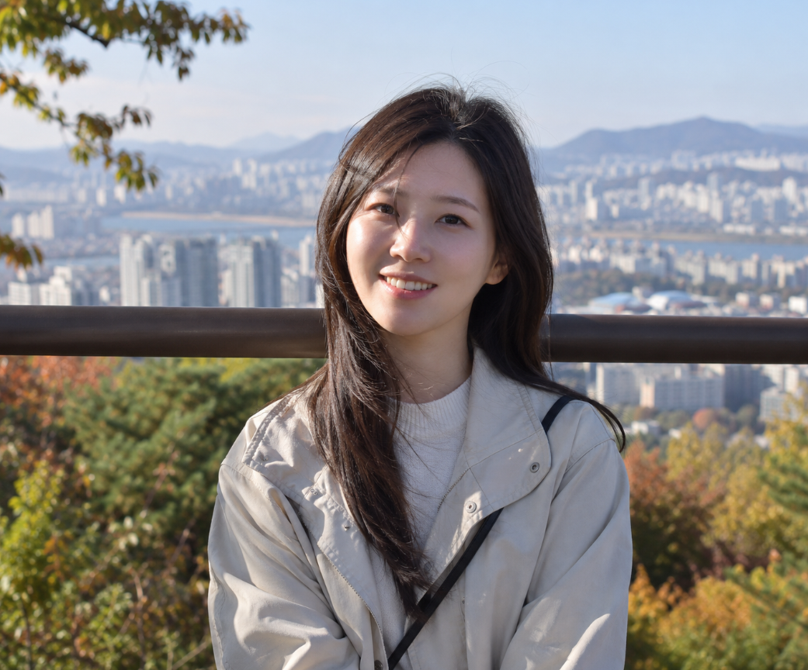

이탈리아, 빛의 시간 — 포토앨범
직접 촬영한 사진을 글과 함께 엮어 웹 포토앨범으로 완성한 SMAC 예시입니다.
포토앨범 보기 →링크를 아는 사람만 볼 수 있는 일부공개 영상입니다. 다른 분께 공유하지 말아주세요. 이 정리본과 함께 보시면 훨씬 빠르게 복습하실 수 있습니다.
화면을 터치한 그 자리에 초점이 맞습니다. 앞에 있는 대상을 터치하면 뒤가 흐려지고, 뒤를 터치하면 앞이 흐려집니다. 초점을 어디에 둘지는 내가 정하는 것입니다.
터치하면 옆에 태양 모양 아이콘이 나옵니다. 이걸 위아래로 움직여 밝기를 조절합니다. (사각형만 뜨면 화면을 길게 꾹 누르면 노란 원으로 바뀝니다. 아이폰은 위아래로 움직입니다.)
사진은 입체를 평면으로 압축하는 일입니다. 그래서 실제로는 떨어져 있어도 사진에서는 겹쳐 보입니다.

해결은 간단합니다. 촬영자가 왼쪽이나 오른쪽으로 한 발 움직이면 됩니다. 피사체를 옮기는 게 아니라 내가 움직이는 것입니다.
스마트폰을 켜면 처음 나오는 1x가 광각렌즈입니다. 가까운 것은 훨씬 크게, 먼 것은 작게 나오고, 가장자리로 갈수록 찌그러집니다.
머리부터 발끝까지 찍을 때 — 얼굴은 가운데, 발 아래 공간을 두고, 충전기 꽂는 곳(스마트폰 아래쪽)을 앞으로 미는 각도로 찍습니다.
플레이스토어·앱스토어에서 나뭇잎 모양 스냅시드(Snapseed)를 설치합니다. 유사품이 있으니 아이콘을 확인하세요. 처음 실행하면 사진 접근 권한을 "모두 허용"으로 하셔야 사진이 전부 보입니다.
도구 → HDR Scape. 어둑하게 찍힌 사진, 구름이 드라마틱한 하늘 사진을 넣고 누르기만 하면 됩니다. 코로나 이전 포토샵 강의에서 부산·제주도에서 올라와 배우던 기법이 버튼 하나로 적용됩니다.
저장은 오른쪽 아래 체크 → 내보내기 → 사본으로 저장. 원본과 보정본을 비교할 수 있어 사본 저장을 추천드립니다.
도구 → 화이트 밸런스에서 손가락을 좌우로 움직여 보세요. 내리면 차가운 느낌, 올리면 따뜻한 느낌이 됩니다. 색만 바뀌었을 뿐인데 사진의 감성 자체가 달라집니다.
강의 내내 반복된 기준입니다. AI 이미지에는 감흥도 추억도 없습니다. 목적은 내가 직접 찍은 사진을 더 좋게 만드는 것입니다. 그래서 보정을 시킬 때도 "원본을 유지" 쪽을 선택하셔야 합니다.
요즘은 프롬프트가 정교하지 않아도 됩니다. 목적을 말해주는 것이 핵심입니다.
인스타그램에 올리고 싶은데 예쁘게 사진 보정해 줘
칼국수를 주인공으로, 선예도를 살려 먹음직스럽게 보정해 줘
고명에 포커스를 맞춰줘
배경을 완전히 지워달라고 하면 박제된 것처럼 어색해집니다(강의 중 사슴 예시). 지저분한 것만 정리하고 뭔가 있는 뉘앙스는 남기는 것이 훨씬 좋습니다. 나무 받침이나 소품이 들어가면 완성도가 올라갑니다.
이 사진을 밝고 예쁘게 보정해 줘
HDR 적용시켜 줘
피부 색상을 낮추고 톤을 올려줘
인물의 얼굴 밝기를 조금 밝히되 채도는 빼줘
내가 찍은 사진에 짧은 글을 얹는 방식입니다. AI가 만든 이미지가 아니라 내가 실제로 다녀온 곳의 사진이기 때문에 감동이 다릅니다.
이 사진을 이용해서 인스타그램에 올릴 이미지로 만들어 줘
1년치 사진을 월별로 골라 달력을 만들어 줍니다. 강의에서는 폴더 접근 권한을 준 뒤 AI가 직접 사진을 골라 12개월 달력을 PDF로 만들어 냈습니다.
사진 여러 장을 주고 "배치까지 고려해서 짧은 글도 넣어 포토북 만들어 줘"라고 하면 만들어 줍니다. 그리고 이렇게 이어가시면 됩니다.
1. HTML로 만들어 줘
2. 웹에서 시각화 시켜줘
사진 한 장을 골라 직접 연습하고, 아래 도구로 결과물을 확장해 보세요.
직접 촬영한 사진을 글과 함께 엮어 웹 포토앨범으로 완성한 SMAC 예시입니다.
포토앨범 보기 →강의 내용을 따라 해볼 수 있는 사진 예제파일 모음입니다.
Google Drive 열기 →복습과 사진 활용을 더 깊게 이어갈 수 있는 보너스 자료입니다.
선물 자료 받기 →사진의 목적에 맞는 도구를 골라 바로 사용해 보세요.
내일 사진 찍을 때 이 다섯 가지만 해보셔도 달라집니다.
강의에서 안내드린 과정입니다. 궁금한 점은 편하게 문의 주세요.
9월 21일 · 9월 28일 밤 8시 30분 (신청 마감 9월 20일) · 문화체육관광부 등록 민간자격
카메라 원리와 조리개 우선 모드까지 다룹니다. 수강료에 자격증 발급이 포함되어 있습니다.
신청하기 →
사진 촬영·편집, 영상 제작, AI 활용, 퍼스널 브랜딩, 시강까지 8주 과정. 평생 수강입니다.
수료 후 보조강사로 활동하실 수 있고(시간당 4만원), 자격증 과정 운영도 가능합니다.
신청하기 →
17기부터 23기까지의 녹화본(약 2,800분)으로 자율 학습하며, 모르는 것은 개인톡으로 질문하는 과정입니다.